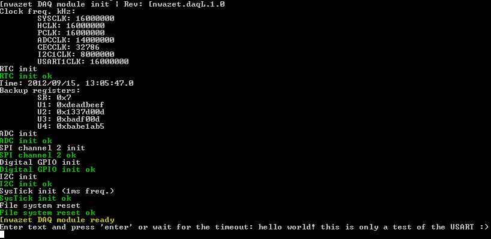

08 - Serial Communications
The DAQ module provides a USART port for TTL-level serial communications with many types of devices such as:
- Sensors,
- FTDI serial interfaces,
- Microcontrollers,
- X10 transceivers,
- Wireless modules (XBee, WiFi, RF transceivers),
- GPS receivers,
- Computers
- ...
The DAQ's USART interface is intended for exchanging short data packets between devices rather than streaming serial data continuously. In this context, the DAQ module generally acts as a master, initiating the communication with the target device, then waits for a response. A maximum of 512 bytes per packet can be sent through the USART port per call. Asynchronous data buffering will be available in an upcoming firmware update to enable stream-oriented scenarios as needed.
USART Interface
- Usart.SetConfig(UsartConfig config): reconfigures the USART through the properties of a UsartConfig object (see the default configuration properties below). Time out values applicable to byte-level transmission and reception can be specified.
- UInt16 Write(string text): this helper function writes a UTF8 string to the USART and returns the number of bytes sent.
- UInt16 Write(byte[] buffer, int offset = 0, UInt16 length = 0): writes a byte array to the USART. An offset in the byte array can be provided to indicate where writing should start from. Providing a buffer length allows writing less bytes than the total length of the byte array.
- string Read(int length = MaxByteChunk, UInt32 totalTimeoutMs = 0, bool useTerminator = true, byte terminator = (byte)'\r'): by default, this helper function waits indefinitely for a string to be entered. The function returns whenever the maximum number of bytes has been received or when a termination character is received. The returned string includes the terminator.
- UsartReadResult Read(byte[] buffer, int offset = 0, int length = 0, UInt32 totalTimeoutMs = 0, bool useTerminator = false, byte terminator = 0): This function reads a number of bytes from the USART and returns a result object with the actual number of bytes read, if a timeout occured and if a terminator character was received. UsartReadResult.ToString([] buffer) provides a convenient way of converting a byte array to a UTF8 string.
Default USART configuration
BaudRate = UsartBaudRate.Baud115200; DataBits = UsartDataBits.Eight; StopBits = UsartStopBits.One; Parity = UsartParity.None; HardwareFlowControl = UsartHardwareFlowControl.Disabled; TransmitTimeoutMs = TransmitTimeoutMsDefault; ReceiveTimeoutMs = ReceiveTimeoutMsDefault;
Sample Output
User input: hello world! this is only a test of the USART :)

using System;
using System.Threading;
using Microsoft.SPOT;
using Microsoft.SPOT.Hardware;
using SecretLabs.NETMF.Hardware.NetduinoGo;
using Nwazet.Go.DAQ;
namespace Tutorials {
public class SerialCommunications {
public static NwazetDAQ daq = new NwazetDAQ();
public static void Main() {
daq.Initialize(GoSockets.Socket1);
var usartConfig = new UsartConfig();
usartConfig.BaudRate = UsartBaudRate.Baud115200;
daq.UsartPort.SetConfig(usartConfig);
daq.UsartPort.Write("Enter text and press 'enter' or wait for the timeout: ");
var text = daq.UsartPort.Read(totalTimeoutMs: 10000);
if (text.Length != 0) {
Debug.Print("User input: " + text);
} else {
Debug.Print("No user input");
}
}
}
}